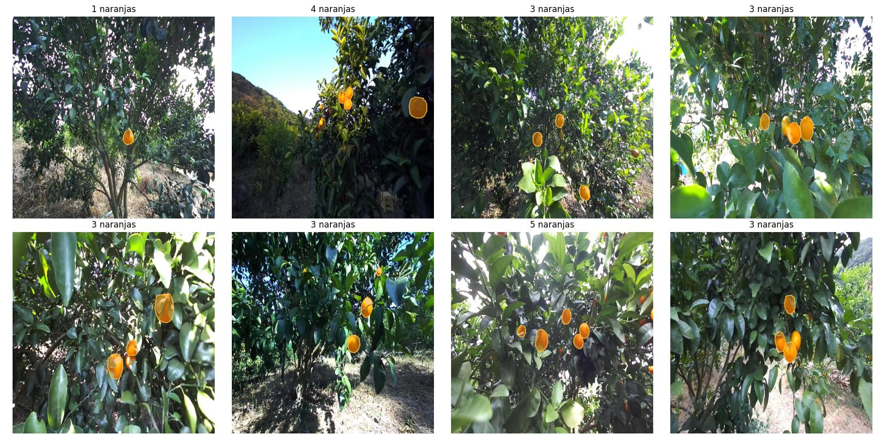
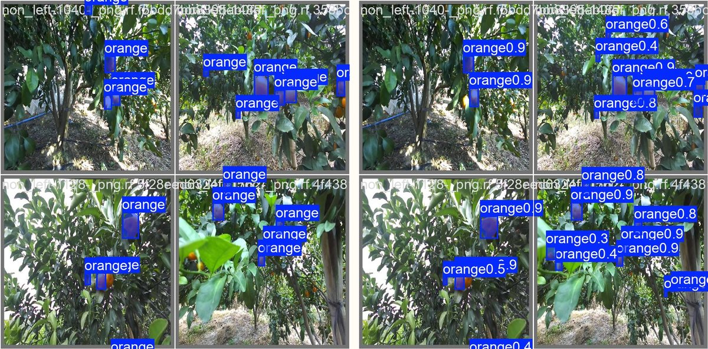
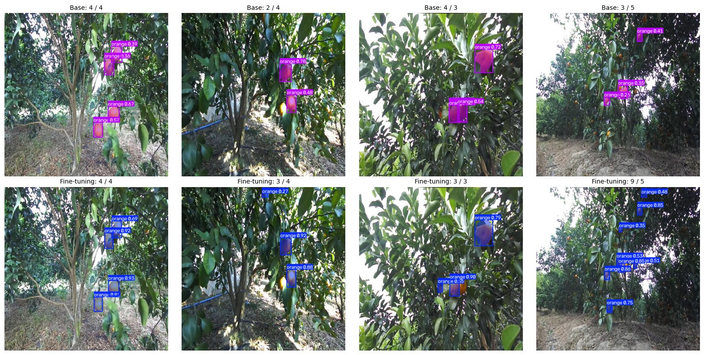
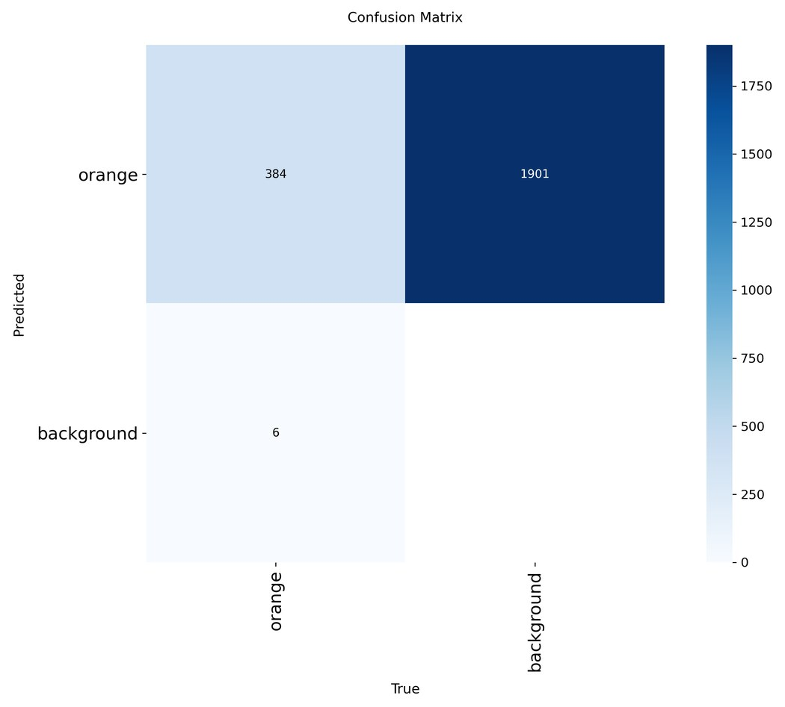
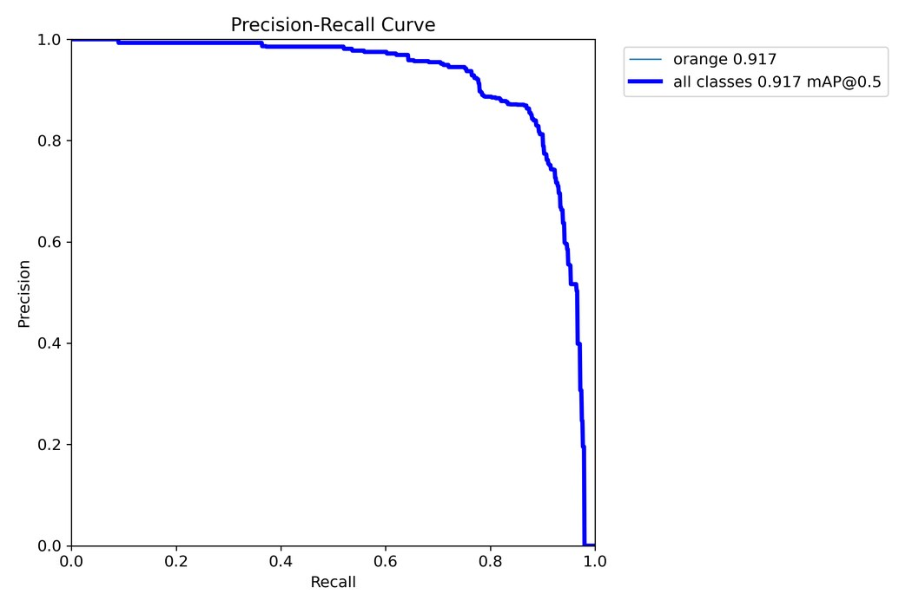

Proyecto de Inteligencia Artificial
ThreeDetection: segmentación y conteo de naranjas con YOLO
Contar naranjas a mano en el árbol es lento y muchas frutas quedan tapadas por hojas. ThreeDetection entrena un modelo de segmentación de instancias que encuentra cada naranja, dibuja su contorno, la cuenta y estima su distancia a la cámara. Sirve como base para estimar la cosecha, guiar un brazo robótico o clasificar fruta por tamaño, y corre en el navegador con una webcam común.
-
Dataset
Orange occlusion v5 de Roboflow Universe (CC BY 4.0): 1000 fotos de naranjos a 640×640 px con 3749 naranjas anotadas con polígonos, muchas tapadas por hojas.
- Entrenamiento: 700 imágenes · 2574 naranjas
- Validación: 200 imágenes · 785 naranjas
- Test: 100 imágenes · 390 naranjas
- Se descartó la clase hoja y se dejó solo naranja
-
Modelo
YOLO26n-seg preentrenado en COCO (~2,7 M de parámetros), ajustado en dos etapas en Google Colab con una GPU T4:
- Transfer learning: backbone congelado (10 capas), 30 épocas, batch 16, 640 px
- Fine-tuning: todas las capas, AdamW con lr = 1·10⁻⁴, sin warm-up, 30 épocas a 1024 px, batch 8
- Aumento de color HSV (tono 0,01, saturación 0,7, brillo 0,5) y early stopping a las 10 épocas sin mejora
- Exportado a ONNX (11 MB) con el NMS incluido
-
Optimización de hiperparámetros
Búsqueda manual por comparación sobre el mismo split de test, cambiando un factor a la vez:
- Estrategia: modelo base, transfer learning y fine-tuning
- Resolución: 640 vs. 1024 px (1024 mejora la máscara pero es 2,2 veces más lento)
- Arquitectura: YOLOv8n, YOLO11n y YOLO26n con 3 semillas cada una
- Elegido: el modelo de fine-tuning usado a 640 px, el de menor error de conteo y el más rápido en el navegador

Resultados
Imágenes y gráficos generados por Ultralytics al entrenar y evaluar el modelo de la demo (fine-tuning), con las fotos de validación y test.




- Error de conteo
- 1,08
- Máscara mAP50-95
- 0,65
- Precisión / recall
- 0,85 / 0,88
- Distancia
- ~2,8 cm
naranjas por imagen (el modelo base: 1,65)
en test (el modelo base: 0,42)
de lo que marca, cuánto es naranja / cuántas encuentra
de error medio entre 30 cm y 1 m (Logitech C270)
| Arquitectura | Parámetros | Máscara mAP50-95 | F1 | Error de conteo (MAE) | Inferencia (ms/img, T4) |
|---|---|---|---|---|---|
| YOLOv8n-seg | 3,4 M | 0,674 ± 0,003 | 0,853 ± 0,006 | 1,55 ± 0,01 | 6,9 ± 1,0 |
| YOLO11n-seg | 2,9 M | 0,676 ± 0,002 | 0,852 ± 0,011 | 1,29 ± 0,10 | 6,2 ± 0,9 |
| YOLO26n-seg | 3,1 M | 0,671 ± 0,012 | 0,863 ± 0,007 | 1,27 ± 0,03 | 7,7 ± 1,3 |
Las tres arquitecturas empatan en calidad de máscara; YOLO11 y YOLO26 cuentan un 18 % mejor que YOLOv8.
¿Qué es la segmentación de naranjas?
Es una tarea de visión por computadora en la que un modelo de Inteligencia Artificial analiza una imagen y marca cada píxel que pertenece a una naranja. Además separa cada fruta como un objeto distinto (segmentación de instancias), así que también se pueden contar, aunque estén tapadas en parte por hojas o por otras naranjas.
-
Estimación de cosecha
Contar las naranjas de cada árbol para anticipar el rendimiento de la quinta antes de cosechar.
-
Cosecha robotizada
Ubicar cada fruta con su contorno exacto para que un brazo robótico sepa dónde agarrarla.
-
Control de calidad
Medir el tamaño y el color de cada naranja para clasificarlas en la línea de empaque.
Probalo vos
Cargando modelo…
Activá la cámara o subí una foto con naranjas para ver la segmentación.